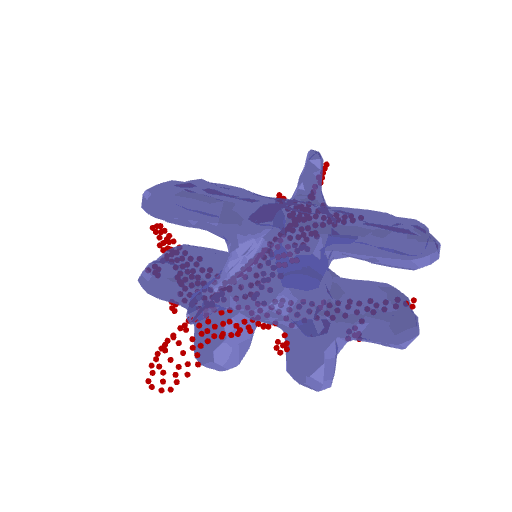
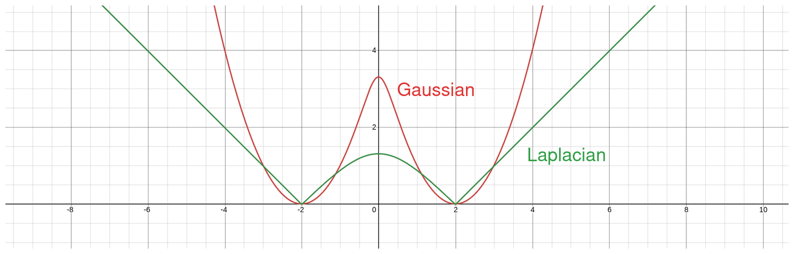
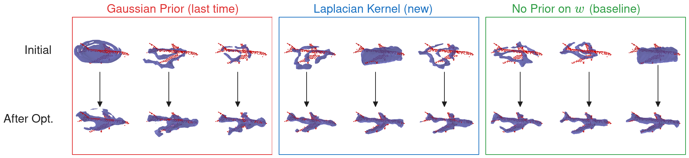
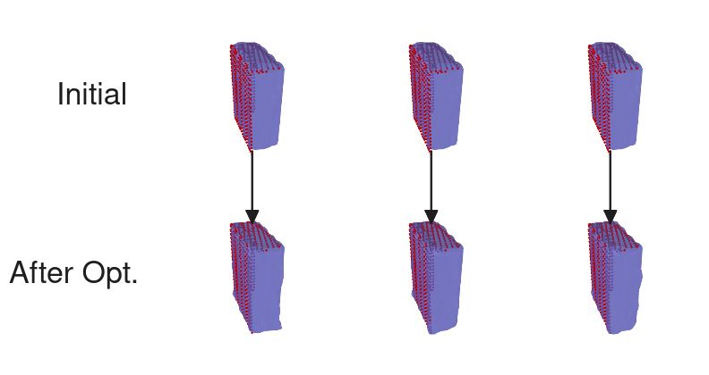

2024 Sep 27
We are trying to create a method for object reconstruction inspired by V-PRISM [1]. We want our method to (1) enforce an object-level prior; (2) capture diversity/uncertainty; (3) be robust to out-of-distribution objects. The downstream task we care the most about with these reconstructions is grasping in clutter. Previously, we discussed a method for querying the dataset to get relevant pre-trained Hilbert map weights back. We were able to hook this up to do reconstructions, but there were a few hiccups. On out-of-distribution observations, the method seemed to be “over-regularized”. Here is a GIF of that:

The action items from last meeting were:
I think I was able to do these 3 things this week, but I didn’t spend as much time as I could have. This was partly due to starting the NSF-GRFP fellowship application.
Because we want robustness from our reconstruction, we need to make sure that we can still reconstruct significantly out of distribution objects. Last time, we were using a KDE with Gaussian kernel for the prior. The problem with this is that the Gaussian function goes to 0 very fast. In practice, this means that the log prior, \ln P(w) was \Theta (\|w\|^2) as \|w\| \rightarrow \infty (quadratic in the limit). This means that it will “overpower” our likelihood during optimization. In order to combat this, I propose using a Laplacian kernel, k(x, y) = \exp(-\gamma \|x - y\|), for KDE so that the prior has a “longer tail”. In practice, this means that our log prior will be linear in the limit. Here is a graph that visually shows the difference:

Using Laplacian kernels for our prior ensures that our likelihood can overpower our prior for out of distribution examples. This also requires retuning hyperparameters, which should be set to ensure that we both (1) enforce the prior for in distribution examples and (2) overcome the prior for out-of-distribution examples.
Note: Last meeting we also discussed other possible distributions like student-t, field of experts. I figured that the laplacian kernel worked and was probably good enough.
Does the new approach qualitatively look better on out-of-distribution airplane?

Does the new approach still enforce the prior for known objects?

How does the new approach stack up quantitatively?
Here are the stats for the Box example:
| Approach | Chamfer ⬇️ | IoU ⬆️ |
|---|---|---|
| Gaussian Prior (last time) | 0.0099 | 0.8045 |
| No Prior | 0.0150 | 0.7401 |
| Laplacian Kernel (new) | 0.0096 | 0.8006 |
Note: The Chamfer and IoU were averaged across 8 particles.
At a high level, we consider a Bayesian formulation: P(H | D) \propto P(D | H) P(H). In our specific case, we take a hypothesis to be a tuple (w, T) \in \mathbb R^H \times SE(3) consisting of a Hilbert map weight and a 6-DoF pose. Our data \{(x_i, y_i)\}_{i \in [N]} \in \mathbb R^3 \times \{-1, 1\} consists of points and labels obtained by negatively sampling similar to V-PRISM [1]. Thus, we have the following formulations for our likelihood, assuming I.I.D. samples: P(D | H) = \prod_{i = 1}^N P(y = y_i | x = x_i, w, T) = \prod_{i=1}^N \sigma(y_i w^\top \phi(x_i; T)), where \phi(x; T) is the hinge point embedding used in Hilbert maps, with hinge points transformed by T. We get into trouble when we try to find a clean justification for our prior. Right now, during construction of our prior:
After last meeting, I think it would be a good idea to discuss a how to theoretically justify this prior.
Last meeting we talked about viewing the registration process as being data-conditioned in the probabilistic framing. I think this is a good way to think about it, but I had a hard time unifying the reconstruction after registration with the query and registration in a sound way. However, I think there are still a few ways we can view the querying.
Argument 1: Optimization problems are easier & faster to solve if initialized close to the solution.
We could argue that the querying procedure as well as registration is to find points in our hypothesis space (w, T) that (probably) have a high posterior, so we can initialize our SGLD close to the optimum to make the problem easier.
Argument 2: Locally approximating the Prior with nearby points in dataset is OK, because that is where our particles are initialized near
Because we know where we will be initializing our particles and we will being running optimization for local convergence, we can approximate our prior with a KDE over just nearby points. This will give use efficiency as well, as computing the KDE for the entire dataset at each iteration would be time consuming.
Argument 3: Dataset samples with high likelihood impact the posterior the most
The idea here is that we want to approximate our prior with only a subset of the dataset, while ensuring our posterior distribution isn’t changed too much from if the prior used the full dataset. The argument is that samples with high likelihood have the greatest impact on the posterior distribution. In other words, removing a sample with high likelihood changes the posterior distribution more than removing a sample with a low likelihood. We would then phrase our query as an approximate to finding high likelihood particles.
A small mathematical justification for Argument 3 is as follows: Consider a KDE with tunable weighting: P_\alpha (x) = \sum_i \alpha_i k(x_i, x), We consider the “true” posterior is (omitting normalization): P_\text{post} = P_\text{likelihood}(x) P_\text{prior}(x) = P_\text{likelihood}(x) \left[ \frac{1}{N}\sum_i k(x_i, x) \right]. We want to see how much the “distance” between the true posterior and P_{\alpha, \text{post}} = P_\text{likelihood}(x) P_\alpha (x) changes w.r.t. \alpha. Using the KL divergence, we can think about the gradient when \alpha = 1/N: \nabla_\alpha KL(P_\text{post} \| P_{\alpha = 1/N, \text{post}}) = -\nabla_\alpha \mathbb E_{P_\text{post}} \left [ \ln P_\alpha(x) \right] After some math, \frac{\partial}{\partial \alpha_i} KL = -\int_{\mathbb R^N} P_\text{likelihood}(x) k(x_i, x) dx This means that the weighting of a particle influences the posterior the most when its kernel density has high likelihood.
A robotic experiment should be:
We discussed last time:
We could do basically what we did last time for this.
Question: Is it possible to do quantitative experiments on the real world?
I have started working on the NSF-GRFP application. My application is due Oct. 18. The reference letters are due Oct. 11. My plan is to have rough drafts done by the end of this weekend (I am halfway through the personal statement). I wanted to maybe get some feedback on the angle I am trying to take with the statements.
Research statement angle:
I am planning on doing the following next week: